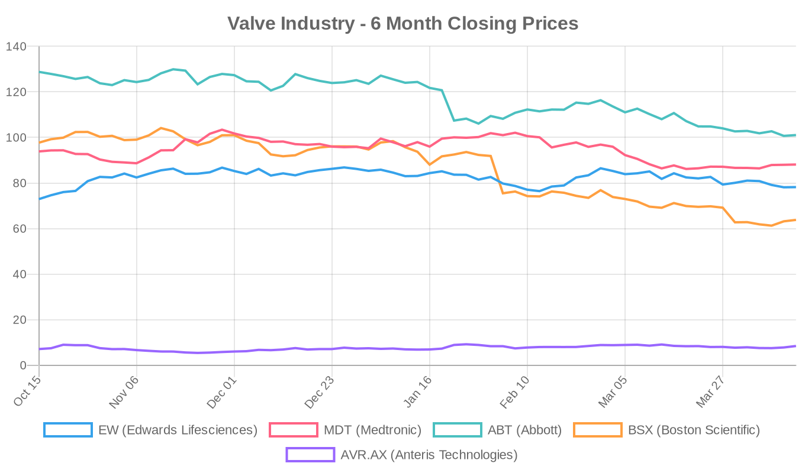
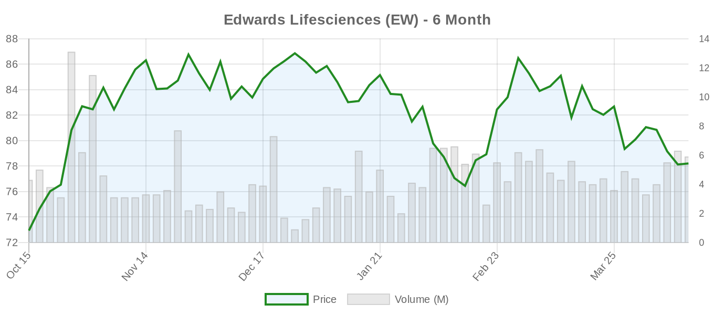
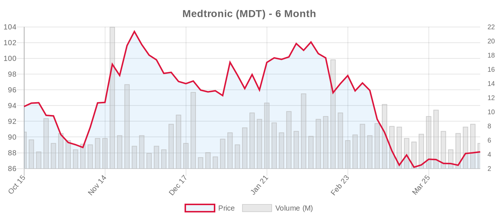
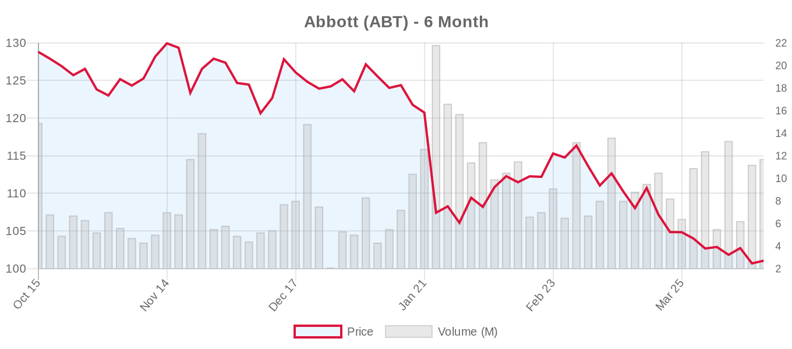
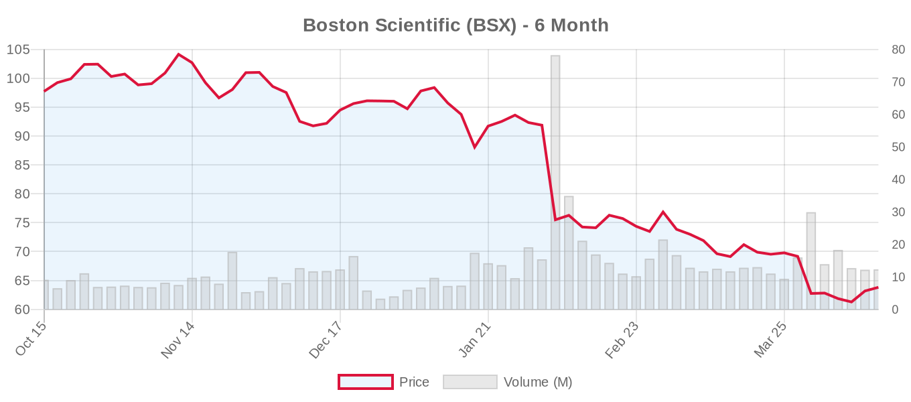
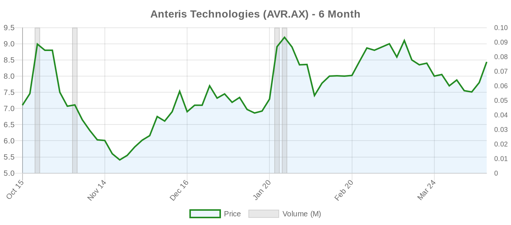

|
||||||||
|
April 15, 2026 By E. Nolan Beckett |
||||||||
|
||||||||
Executive SummaryToday's structural heart landscape features new evidence that transaortic flow rate may outperform ejection fraction and stroke volume index for predicting survival in low-gradient aortic stenosis — a finding that could reshape how we classify and treat this challenging patient subset. Meanwhile, the Tendyne transcatheter mitral valve replacement system shows encouraging results across all degrees of mitral annular calcification, and the tricuspid intervention space continues to mature with a comprehensive review highlighting the persistent gap between symptom improvement and survival benefit. With Edwards Lifesciences reporting earnings next Wednesday and Abbott just two days away, this is a critical week for the financial pulse of structural heart. For the clinical audience: the Mayo Clinic TAFR study published in Heart challenges our reliance on LVEF and SVI as flow surrogates in low-gradient severe AS — a population that remains one of the most vexing in valve disease. Separately, the TENDER registry sub-analysis provides reassurance that valve-in-MAC with the Tendyne system is feasible even in severe MAC, though the numbers remain small and mortality at 1 year across all cohorts demands sober interpretation. On the TAVR front, two studies address post-procedural assessment gaps: one demonstrates that echocardiography systematically overestimates transvalvular gradients versus invasive measurement, and another explores the clinical significance of supranormal LVEF after TAVI. A provocative case report from JACC Case Reports describes transapical TAVR for native aortic regurgitation with chronic type A dissection — a reminder that off-label TAVR continues to push anatomical boundaries, for better or worse. Today's Key Findings
Aortic Valve (TAVR/TAVI)Transaortic Flow Rate: A Better Flow Metric for Low-Gradient AS?[NOTABLE] A retrospective analysis from Mayo Clinic examined 475 patients with low-gradient severe AS (AVA ≤1 cm², Vmax <4 m/s or MG <40 mmHg) who underwent TAVR between 2017 and 2023. The key finding: transaortic flow rate (TAFR) — stroke volume divided by LV ejection time — was the only flow parameter independently associated with 1-year mortality (HR 2.38; 95% CI 1.19–4.76), even after adjusting for reduced LVEF, low SVI, sex, CKD, and MR/TR. Neither LVEF <50% nor SVI <35 mL/m² reached independent significance. Editorial perspective: Low-gradient severe AS remains one of the most diagnostically fraught scenarios in valve disease. Current guidelines (both ACC/AHA 2020 and ESC 2025) rely on LVEF and SVI to define low-flow states and trigger dobutamine stress echo for pseudo-severe AS discrimination. If TAFR proves more accurate, it could change the diagnostic algorithm for these patients. However, several caveats deserve emphasis: this is a single-center retrospective study of patients who already underwent TAVR (selection bias), the cohort was elderly (mean age 85), and TAFR is not yet standardized across echo labs. The concept is physiologically compelling — flow rate accounts for ejection time, which volume-based metrics ignore — but prospective validation is needed before clinical adoption. The critical thresholds referenced in current guidelines (LVEF <50%, SVI <35 mL/m²) were derived from large datasets; TAFR <220 mL/s requires similar validation. Transapical TAVR for Native AR With Chronic Type A DissectionA JACC Case Reports publication describes transapical TAVR using a leaflet-anchoring valve in an elderly frail patient with severe native aortic regurgitation complicated by localized chronic Stanford type A dissection — a scenario deemed prohibitive for both surgery and transfemoral TAVR. The rationale for transapical access was avoidance of arch manipulation to minimize dissection propagation risk. Follow-up imaging showed stable valve function and dissection morphology. Editorial perspective: This case illustrates the continued expansion of TAVR into anatomic extremes. TAVI for native AR remains Class IIb in the ESC 2025 guidelines (only for inoperable patients with suitable anatomy) and is not addressed in ACC/AHA 2020. Adding chronic type A dissection to the equation pushes well beyond any guideline territory. While the outcome here was favorable, it's critical to recognize this as a rescue strategy in a single patient — not a signal for broader adoption. The case does highlight the potential value of transapical access for specific anatomies where transfemoral and surgical routes are precluded, even as transapical approaches have largely fallen out of favor due to their own complication profile. Post-TAVI Gradient Assessment: Invasive vs. EchocardiographicA systematic review in the Journal of Clinical Medicine analyzed 12 studies comparing invasive and Doppler-derived gradients after TAVI. Across all studies, echocardiographic mean gradients were consistently 4–7 mmHg higher than invasive measurements — a discrepancy more pronounced with balloon-expandable valves, small-diameter prostheses, and high-flow states. An invasive mean gradient ≤10 mmHg was repeatedly identified as the threshold associated with optimal procedural success and long-term outcomes. This aligns with the recently updated Heart Valve Collaboratory imaging framework for evaluating transcatheter valve failure, which emphasizes that echocardiographic follow-up should be interpreted in context of baseline invasive hemodynamics. The clinical implication is practical: elevated Doppler gradients post-TAVI should not reflexively trigger concern for structural valve deterioration without considering the known systematic overestimation — an important nuance for the ESC 2025 emphasis on lifetime management and valve durability surveillance. Supranormal LVEF After TAVI: Benign or Meaningful?A retrospective study from Hospital Clínico San Carlos (n=101) examined patients with pre-TAVI supranormal LVEF (≥65%) — predominantly elderly women (mean age 82.8 years, 71.2% female). At 1 year, 70.3% experienced LVEF normalization (55–65%), and 2-year mortality was comparable between those who normalized and those who didn't (~10%). The LVEF-normalized group showed a trend toward LV mass regression, suggesting beneficial reverse remodeling. Small sample, single-center, and observational — but it raises the question of whether supranormal LVEF in severe AS may represent a restrictive physiology that resolves after afterload relief. Osteogenic Progenitor Cells and Vascular Remodeling Post-TAVIA prospective observational study (n=65) found that circulating osteogenic progenitor cells (EPC-OCNs) increased significantly after TAVI while classical endothelial progenitor cells remained stable. EPC-OCN levels rose from 2.50% to 6.25% by 90 days post-procedure. The authors suggest this reflects ongoing calcification or tissue remodeling after valve implantation. Translational relevance: if these cells drive neo-calcification of bioprosthetic leaflets, they could represent a mechanistic target for improving TAVI durability — a priority given the persistent uncertainty about long-term valve performance, particularly in younger patients where the ESC 2025 guidelines emphasize lifetime management planning. Intraoperative VT During TAVI: Case ReportA case report in Annals of Cardiac Anaesthesia describes successful TAVI under monitored anesthesia care in a 76-year-old woman with multiple comorbidities who developed ventricular tachycardia intraoperatively. The case reinforces the importance of robust electrophysiologic preparedness during TAVI, even with the trend toward conscious sedation and minimalist approaches. Conduction disturbances and arrhythmias remain a non-trivial TAVI complication — the ESC 2025 guidelines note that new LBBB and pacemaker rates continue to differ between balloon-expandable and self-expandable platforms. Mitral Valve (MitraClip, PASCAL, TMVR)Tendyne Valve-in-MAC: TENDER Registry Sub-AnalysisA sub-analysis of the multicenter TENDER registry (53 patients across 15 European centers) evaluated transapical Tendyne TMVR outcomes stratified by mitral annular calcification severity. Technical success was comparable across mild (93.8%), moderate (88.2%), and severe (95%) MAC cohorts (p=0.72). Complete MR abolishment was achieved in 88.7%, with minimal residual MR or paravalvular leak at discharge. However, the outcomes demand careful reading:
Editorial perspective: The ESC 2025 guidelines include TMVI for degenerative MS with MAC as Class IIb at experienced centres, acknowledging the high-risk nature of all interventions in this population. This sub-analysis provides some reassurance about technical feasibility across MAC severity grades, including off-label severe MAC. But the sobering mortality and HF hospitalization rates — even if consistent with the multimorbid profile of these patients — highlight that valve-in-MAC remains a last-resort intervention. The paradoxically worse outcomes in moderate vs. severe MAC are unexplained and may reflect confounding rather than a real biological gradient. With only 53 patients and no control arm, these data support continued cautious exploration rather than expanded indication. Tricuspid Valve (TriClip, TTVR)Predicting and Improving Outcomes in Transcatheter Tricuspid InterventionA comprehensive review in Future Cardiology synthesizes the current state of transcatheter tricuspid valve interventions (TTVI). The key message: TTVI consistently improves symptoms, quality of life, and heart failure hospitalizations, but a definitive survival benefit has not yet been established. The authors emphasize that optimal patient selection requires multiparametric assessment including TR etiology, right heart failure staging, multimodality imaging, risk scores, and invasive hemodynamics — ideally within a dedicated Heart Valve Center. Editorial perspective: This review lands in an important moment. The ESC 2025 guidelines elevated transcatheter TV treatment to Class IIa (LOE A), based on TRILUMINATE Pivotal, Tri.Fr, and TRISCEND II — a dramatic shift from the ACC/AHA 2020 guidelines, which didn't address transcatheter TR therapy at all. But the absence of a mortality signal is a recurring theme. The QoL-driven endpoints that powered these trials are clinically meaningful but fundamentally different from the mortality and stroke endpoints that established TAVR's evidence base. The "too-late-referral" problem persists: many patients arrive with irreversible RV failure and end-organ damage. This review's emphasis on avoiding futile procedures in advanced RV dysfunction is particularly important as the field grapples with appropriate patient selection for an expanding therapeutic toolbox. Device & TechnologyBovine Pericardial Valve Market ForecastAn IndexBox market analysis projects continued growth in the bovine pericardial valve market through 2035, driven primarily by TAVR expansion. As transcatheter platforms continue to move into lower-risk and younger populations (per the ESC 2025 age-70 threshold), the demand for bioprosthetic tissue — and the supply chain constraints around it — becomes increasingly relevant. This is an underappreciated bottleneck: bovine pericardial tissue quality, processing standardization, and long-term calcification resistance remain central to whether TAVI durability can match surgical bioprostheses at extended follow-up. Strong Early Results Reported for Less Invasive Valve Fix in High-Risk PatientsMedical Xpress reports on favorable early outcomes for a less invasive heart valve intervention in older, high-risk patients. While details are limited in the report, this aligns with the broader trend of extending transcatheter platforms to more complex patient populations — a trend that warrants ongoing scrutiny regarding durability and long-term outcomes. National Registry Data for Transcatheter Tricuspid Valve ReplacementA Newswise report highlights national registry findings showing strong outcomes for transcatheter tricuspid valve replacement. This adds to the growing real-world evidence base that supplements the TRISCEND II trial data. However, as the Future Cardiology review above notes, registry data lack the controlled comparisons needed to establish definitive benefit — and TTVR carries higher bleeding and pacemaker risks than repair-based approaches. HeartFlow vs. Cleerly: Patent Infringement LawsuitCardiovascular Business reports that HeartFlow has filed a patent infringement lawsuit against cardiology AI competitor Cleerly. While not directly a valve story, AI-based coronary CT analysis is increasingly relevant to structural heart procedural planning — particularly for TAVR, where CT-derived calcium scoring, coronary assessment, and access planning are integral. The outcome of this litigation could affect the competitive landscape for imaging analytics that support valve intervention planning. Financial AnalysisThis is a pivotal week for structural heart industry financials. Abbott reports earnings on April 16 — just two days away — with consensus expectations of $1.15 EPS on $11.00B revenue. The structural heart segment, driven by MitraClip/TriClip and TAVR (Navitor), will be a key focus given recent guideline upgrades for both mitral TEER (ESC Class I for ventricular SMR) and transcatheter tricuspid therapy (ESC Class IIa). Edwards Lifesciences follows on April 23, with analysts expecting $0.73 EPS on $1.60B revenue. Edwards sits at the center of both the TAVR and transcatheter tricuspid/mitral replacement markets (SAPIEN, EVOQUE, PASCAL), making this quarter's commentary on procedure volumes, geographic mix, and the impact of the ESC 2025 guideline expansion particularly consequential. RBC Capital reiterated its Buy rating on Edwards with a $100 price target, reflecting confidence in structural heart dominance despite the stock trading well below analyst consensus ($96.78). Edwards also announced a new heart valve health initiative with David Letterman's IndyCar racing team — a consumer awareness play that signals growing emphasis on patient-facing brand building for valve disease awareness, even as the core commercial engine remains physician-directed. Institutional activity continues: Sumitomo Mitsui Trust Group sold nearly 40,000 shares of Edwards, a modest position trim that likely reflects portfolio rebalancing rather than a directional call. Boston Scientific, meanwhile, continues to trade at a steep discount to its 52-week high (–34.7% over six months), despite a strong_buy consensus from 32 analysts targeting $98.72. The ACURATE neo2/TAVR pipeline and WATCHMAN franchise remain key growth drivers, but tariff concerns and broader medtech headwinds have compressed multiples across the sector. The Medtronic Nitinol Knowledge webinar featuring a Medtronic distinguished engineer underscores the company's continued investment in materials science education — particularly relevant as next-generation valve frames (Evolut FX+, Intrepid) depend on nitinol processing advances for deliverability and durability. Valve Industry Stocks Edwards Lifesciences (EW)
Edwards enters earnings week as the structural heart pure play with the most at stake. The stock has recovered modestly from its 52-week lows but remains 11% below the median analyst target. Key catalysts: TAVR volume growth (especially in the ESC 2025 age-70+ TAVI-preferred zone), EVOQUE tricuspid replacement trajectory, and PASCAL CLASP IID/IIF readouts. RBC Capital's maintained $100 target and Buy rating reflect expectations that Edwards' structural heart dominance translates to mid-teens EPS growth. Watch for management commentary on competitive dynamics with Medtronic's Evolut FX+ and Abbott's Navitor, as well as any update on the SAPIEN M3 mitral program and the critical question of valve durability beyond 10 years. Medtronic (MDT)
Medtronic has underperformed over six months despite strong positions in TAVR (Evolut FX) and TMVR (Intrepid). The Evolut Low Risk long-term follow-up data remain a critical asset for competitive positioning — the trial (NCT02701283) continues active follow-up with 2,223 enrolled patients. The Intrepid TMVR pivotal trial (NCT03242642) is recruiting toward its 1,056-patient target and represents Medtronic's bid for the transcatheter mitral replacement market. The gap between current price ($88.12) and analyst target ($109.56) is notable — approximately 24% upside — suggesting the market is pricing in execution risk or broader diversified medtech headwinds. Abbott (ABT)
Abbott reports tomorrow — the most immediate catalyst in structural heart this week. The stock has shed over 21% in six months, touching its 52-week low of $99.05 within the current 5-day range. Structural heart will be closely watched: MitraClip remains the dominant TEER platform with ESC 2025 Class I status for ventricular SMR, and TriClip holds first-mover advantage in transcatheter tricuspid repair (TRILUMINATE Pivotal). The Navitor TAVR platform continues global rollout (NCT04788888 active, 434 patients enrolled). Analysts see 30% upside to target — an unusually wide gap that reflects either significant undervaluation or market skepticism about near-term execution. The REPAIR-MR trial (NCT04198870, MitraClip vs. surgery for primary MR) remains active and could reshape the TEER vs. surgery debate if results favor transcatheter repair. Boston Scientific (BSX)
Boston Scientific is the hardest-hit major structural heart stock over six months, down nearly 35% from its highs — yet retains a strong_buy consensus from 32 analysts with a $98.72 target (54% upside). BSX's structural heart portfolio is smaller than Edwards' or Abbott's but includes the ACURATE neo2 TAVR platform and the WATCHMAN left atrial appendage closure device. Earnings on April 22 will provide the first look at Q1 2026 performance. The massive gap between price and target suggests either a buying opportunity for conviction holders or a signal that the analyst community hasn't yet adjusted estimates for macro headwinds. Anteris Technologies (AVR.AX)
Anteris remains the most speculative play in the structural heart space, with the DurAVR single-piece TAVR valve advancing through its early feasibility study (NCT05712161, 15 patients enrolled, active not recruiting) and a larger pivotal trial (NCT07194265) now recruiting with a target of 1,650 patients comparing DurAVR to SAPIEN and Evolut series valves. The 6-month gain of nearly 19% reflects growing investor interest in the differentiated single-piece design concept and ADAPT tissue technology, but the company remains pre-revenue with significant clinical and regulatory milestones ahead. Thin analyst coverage (1 analyst) and low volume (13,016 shares) make this a high-volatility position. Note: JenaValve Technology (ARTIST trial sponsor), J Valve Technology, and Meril Life Sciences remain private companies without public market data. Market Outlook: The structural heart sector enters a critical earnings stretch with three of the Big Four reporting within 10 days. The notable compression in all major tickers except Edwards and Anteris likely reflects macro headwinds (tariff uncertainty, medtech sentiment) rather than deterioration in structural heart fundamentals — which, if anything, have been strengthened by the ESC 2025 guideline expansions across TAVR, TEER, and tricuspid therapy. Watch for forward guidance on international TAVR volumes post-ESC age-70 threshold adoption, TEER procedure trends following Class I SMR status, and transcatheter tricuspid commercialization timelines. Clinical Trial UpdatesAortic Valve
Mitral Valve — Repair
Mitral Valve — Replacement
Tricuspid Valve — Repair
Tricuspid Valve — Replacement
Other Relevant Trials
Social & Conference HighlightsNo major conference presentations or social media highlights today. All eyes turn to the Edwards Lifesciences earnings call on April 23 and Abbott's report tomorrow (April 16) — both likely to generate significant structural heart commentary. As we await these readouts, the interplay between the ESC 2025 guideline expansion and real-world adoption rates will be a dominant theme for Q1 earnings commentary across the sector. Closing Thought: Today's literature reinforces a consistent theme in structural heart: the diagnostic and selection challenges are often harder than the procedural ones. Whether it's redefining flow in low-gradient AS with transaortic flow rate, choosing the right MAC patient for Tendyne TMVR, or identifying the tricuspid patient who will benefit versus one who will undergo a futile procedure — the science of who to treat is catching up to the engineering of how. With earnings season upon us, we'll soon see how the market values this expanding but still-maturing field. — E. Nolan Beckett, The Valve Wire |
||||||||
|
|
||||||||
|
||||||||
|